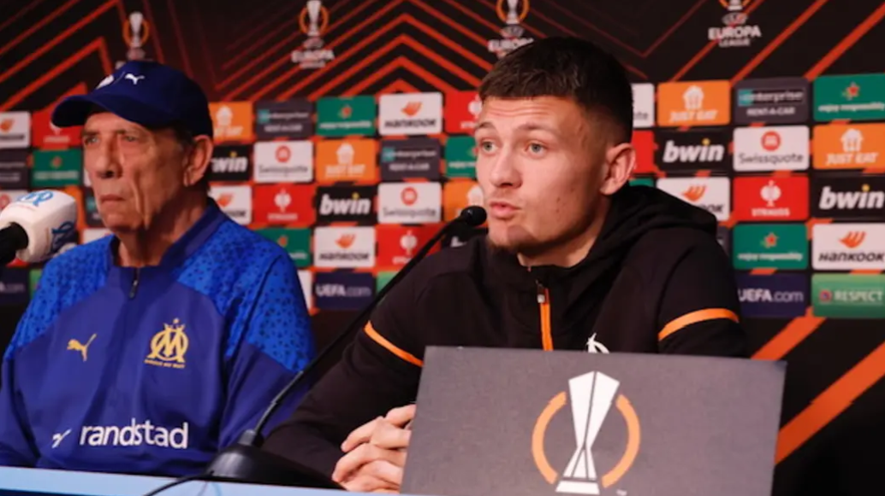

OM. "On joue contre Villarreal pas contre Marcelino", assure Merlin.
Conférence de Presse avant OM vs Villarreal
À 24 heures du huitième de finale aller de Ligue Europa où les Olympiens recevront Villarreal au Vélodrome (21h), Quentin Merlin et Jean-Louis Gasset s'expriment devant les médias.
16:47 - Fin du live
C'est la fin de notre live, merci de nous avoir suivi ! On se retrouve demain soir (21h) pour le 8e de finale aller de Ligue Europa contre Villarreal. Une rencontre à suivre en live commenté sur notre site dès 20h.
Bonne soirée et allez l'OM !
16:46 - Gasset : "Les enfants ce sont eux qui ont les yeux qui pétillent"
Les enfants ce sont eux qui ont les yeux qui pétillent quand ils voient les joueurs et y a peut-être même un futur joueur dedans qui sait ?
16:45 - Gasset : "Je me suis pas rendu compte que le premier match était déterminant"
Je me suis pas rendu compte que le premier match était déterminant, j'étais juste focalisé sur la mission. Petit à petit on joue de mieux en mieux mais on doit faire plus. Je trouve qu'il y a beaucoup de bonnes solutions si tout le monde est dans le bon timing.
16:43 - Gasset : "On prépare en voulant prendre une option conséquente dès le match aller"
On prépare en voulant prendre une option conséquente dès le match aller. Selon le score après on verra, mais pour ça il faut jouer.
16:41 - Gasset : "Suspendre une tribune c'est une aberration"
Le football c'est une fête, pour moi suspendre une tribune c'est une aberration. On va limiter en mettant des enfants, c'est bien pour eux et bravo pour l'initiative. Mais pour un pétard ou un fumigène suspendre toute une tribune je trouve ça aberrant.
On attend du public qu'il nous transporte. Face au Shakhtar et Montpellier on était mené et il nous a pas lâchés. Ce public il est spécial en coupe d'Europe parce qu'il était tendu le premier match. Mais ils étaient là et on a envie de leur faire plaisir.
16:39 - Gasset : "En une séance de travail Aubameyang a vu que je le connaissais par coeur"
Aubameyang est un grand joueur, un très bon joueur et un buteur. Il aime les situations de jeu, se placer à un endroit et c'est là qu'on le met. L'adresse, le sens du but et la générosité il l'a. Je le connais depuis longtemps mais avec des joueurs comme ça il y a moins besoin de jouer. En une séance de travail il a vu que je le connaissais par cœur.
16:37 - Gasset : "Contre Clermont on a retrouvé la maîtrise du jeu"
Contre Clermont on a retrouvé la maîtrise du jeu. Je rassure mes joueurs par le travail, en les mettant à leur poste et en réussissant à leur faire faire des choses. Quand vous montrez les endroits de progression, les jeunes joueurs se disent "waow il me connaît".
16:35 - Gasset : "Les remplaçants font leur job"
Sur les trois matches on a fait trois erreurs qui ont relancé l'adversaire. Avec la dynamique il faut gommer toutes ces erreurs pour faire une belle fin de saison. Villarreal s'est remis dans la bonne dynamique mais il va falloir leur montrer qu'on a des atouts, des compétences et de l'expérience et surtout on a notre public. Les joueurs qui marquent sont ceux qui sortent du banc parce qu'ils sont bien dans l'esprit. Les remplaçants font leur job et postulent pour le match d'après.
16:35 - Gasset : "Nous on joue contre Villarreal"
On en parle jamais, j'étais pas en France quand l'OM était entraîné par Marcelino. Nous on joue contre Villarreal. Demain on va faire le maximum pour contrecarrer tout ça.
16:28 - Merlin : "Demain ça va être un match difficile"
On sait ce qu'on fait sur le terrain, on doit progresser. On est tous monté d'un cran pour éviter de prendre des buts et continuer à marquer.
Demain ça va être un match difficile, Villarreal est une équipe avec de l'expérience et une attaque qui marque des buts et qui est en confiance. Il faudra répondre présent dans l'engagement à nous de bien commencer le match.
16:26 - Merlin : "On veut la qualification"
On s'est remis au travail, je me sens très bien ici et je continue de progresser. On est tous compétiteurs, on veut aller le plus loin possible. On veut la qualification. On va dire que Villarreal a l'habitude de jouer ces matches-là, ils ont gagné il y a trois ans.
16:24 - Merlin : "On joue pas contre Marcelino, on joue contre le club de Villarreal"
Nous on joue pas contre Marcelino, on joue contre le club de Villarreal. Nous on veut se qualifier et prendre une bonne option pour se qualifier.